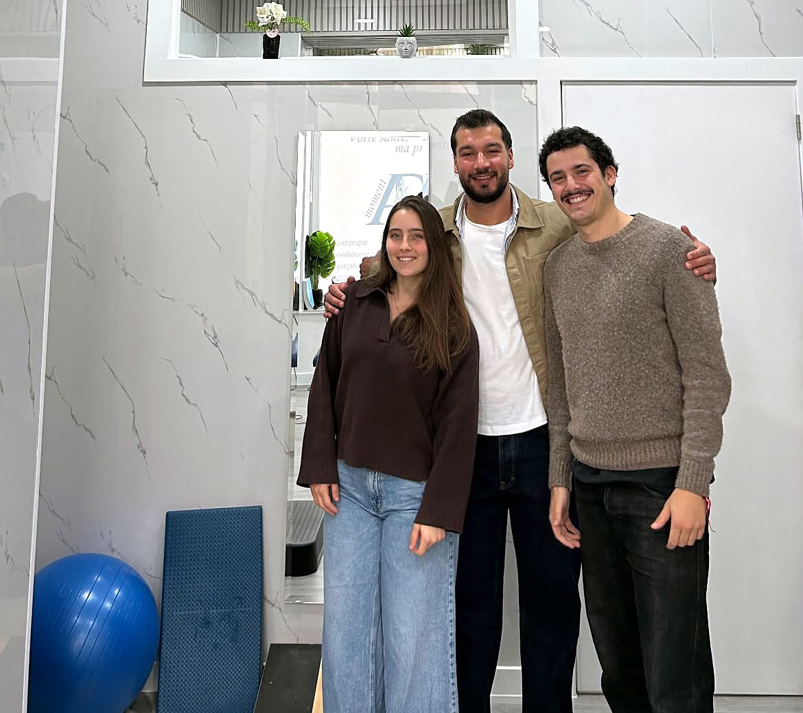
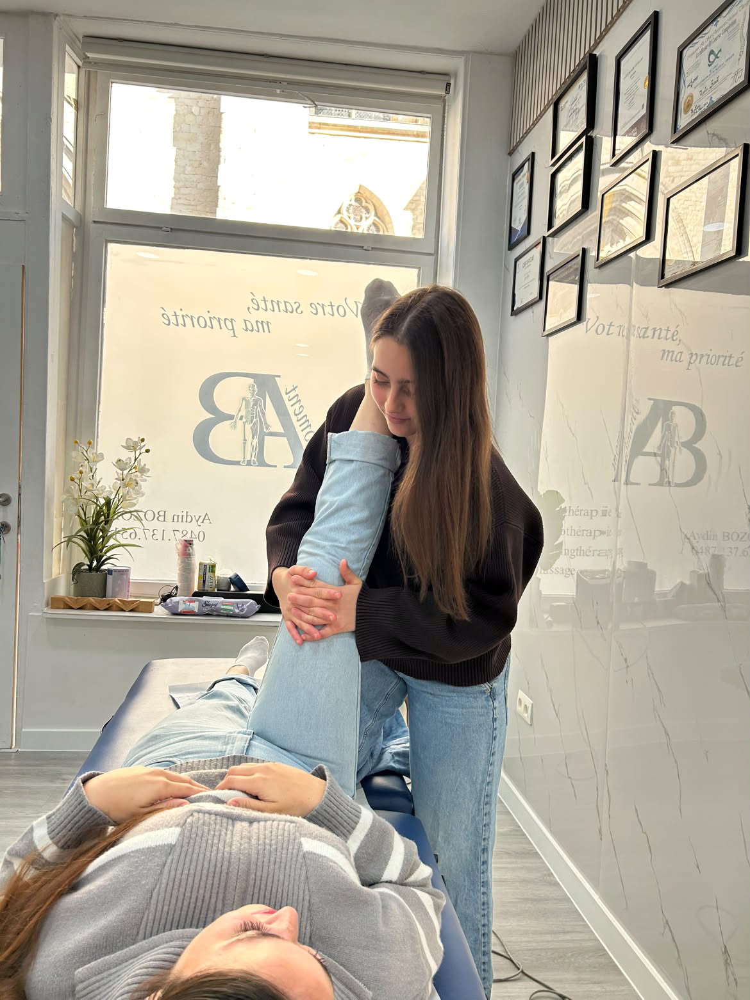
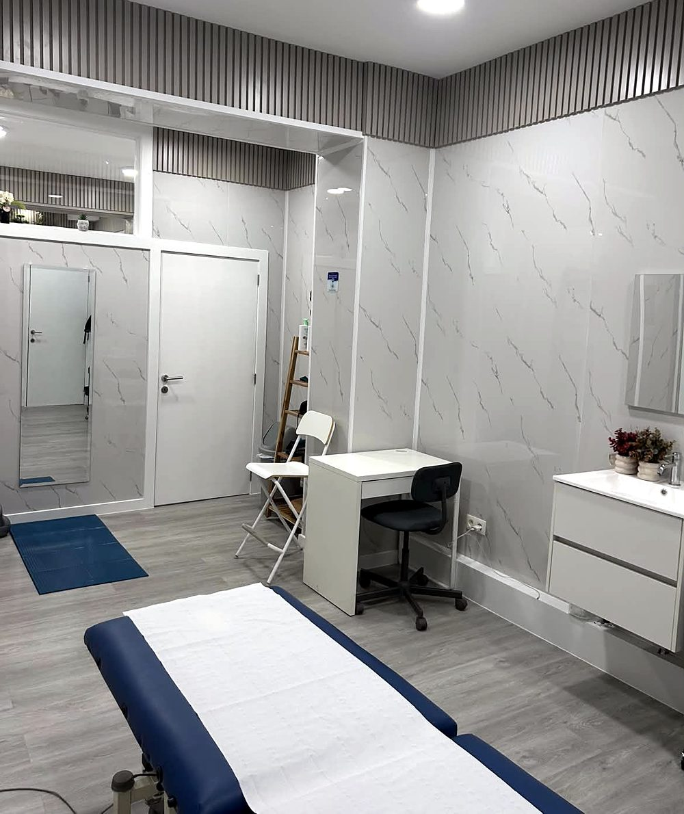
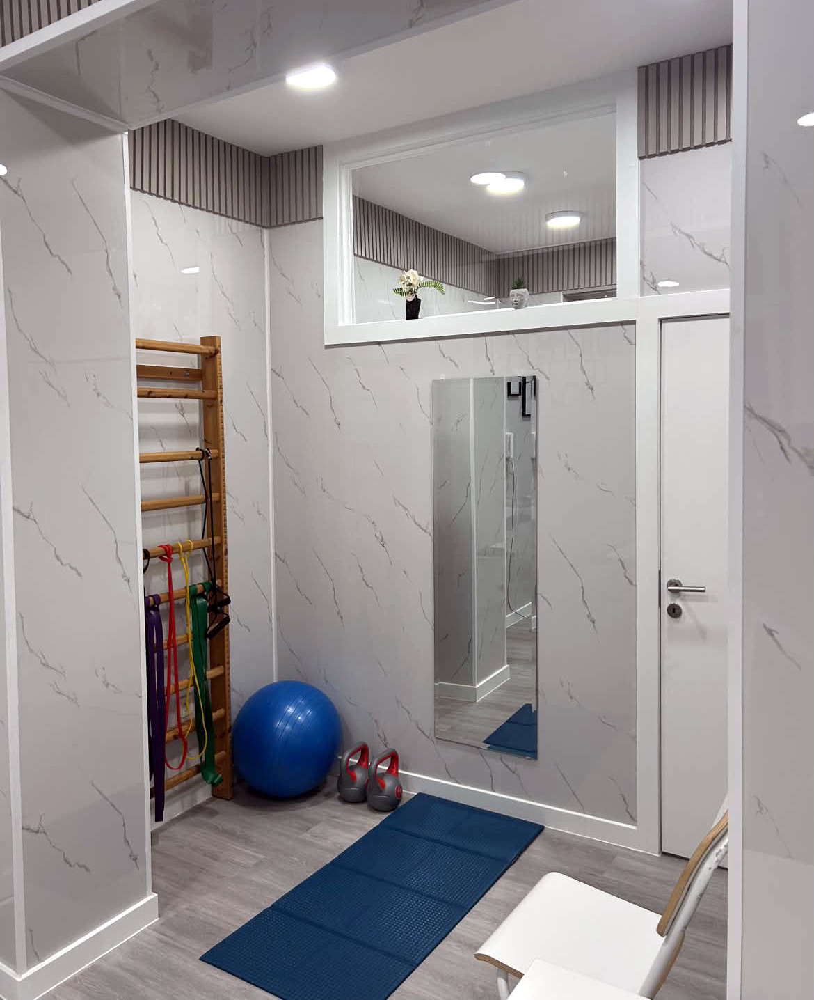
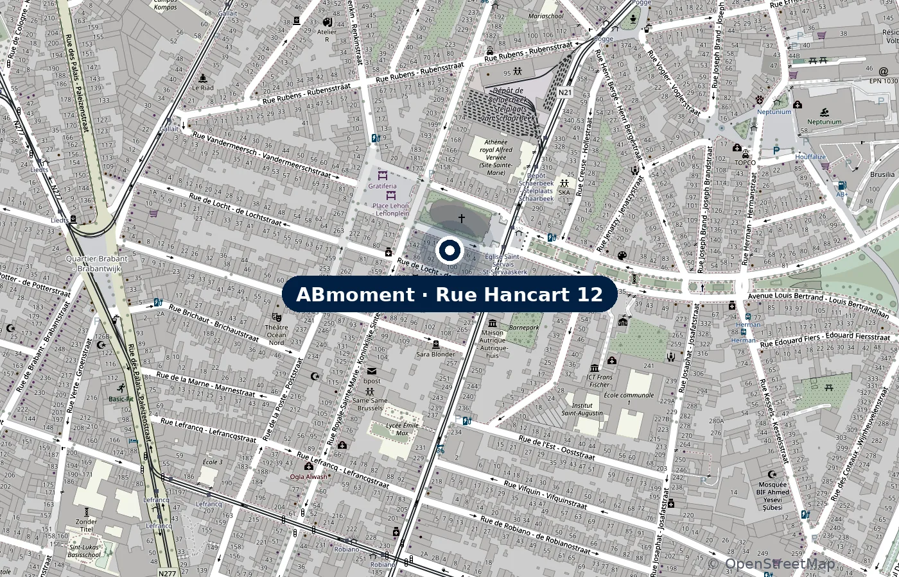

ABmoment, Bruxelles
Centre de kinésithérapie et de bien-être à Schaerbeek
Kinésithérapie conventionnée, séance ABmoment et neuropsychologie, réunies dans un même centre lumineux à Schaerbeek.

Des soins pour tout le corps
Une approche globale qui associe techniques modernes et traditionnelles, adaptée à chaque patient : sportifs, personnes souffrant de douleurs ou simple besoin de récupérer.
Séance de kinésithérapie
Avec Julie Thiebaut et Simon CanoRééducation et traitement des douleurs musculaires et articulaires, après une blessure, une opération ou en cas de douleurs installées.
DécouvrirSéance ABmoment
Avec Aydin BozokUn soin complet en une seule séance : techniques ostéopathiques, thérapie par ventouses, pressothérapie et massage, combinés selon vos besoins pour relâcher les tensions et retrouver de la mobilité.
DécouvrirNeuropsychologie
Avec Kübra BozokBilans TDAH, bilans de QI et bilans neuropsychologiques, avec un accompagnement adapté. Consultations conventionnées.
Découvrir
Le centre
Le savoir-faire, l’écoute et la précision
Un centre lumineux et apaisant à Schaerbeek, où chaque patient est pris en charge dans sa globalité : sportifs, personnes qui souffrent de douleurs, ou simple besoin de récupérer.
« Le corps s’apaise lorsque l’on écoute enfin ce qu’il murmure. »
Le centre en images




Une équipe de spécialistes
Deux kinésithérapeutes conventionnés, une neuropsychologue et psychologue clinicienne, et Aydin Bozok, fondateur du centre.
Nous trouver
Au cœur de Schaerbeek
Rue Hancart 12, 1030 Schaerbeek. Facile d’accès en transports en commun.

Ouvrir dans Google MapsPrenez rendez-vous
Appelez le centre ou contactez directement votre praticien, par téléphone ou WhatsApp.